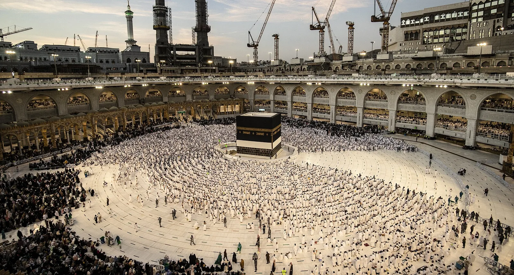
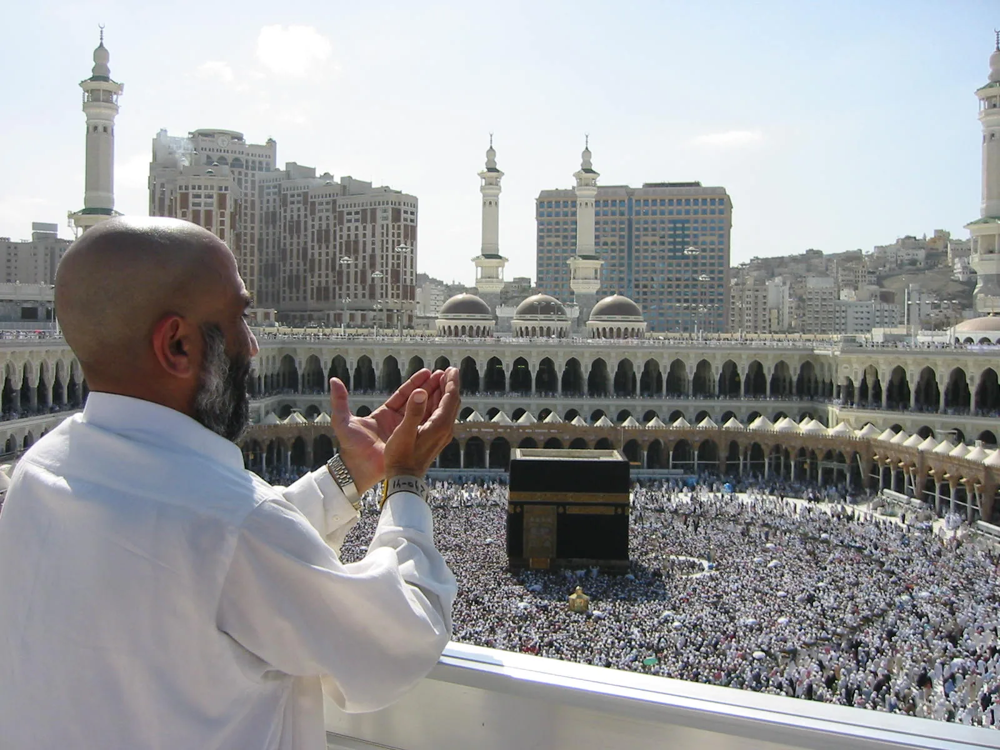
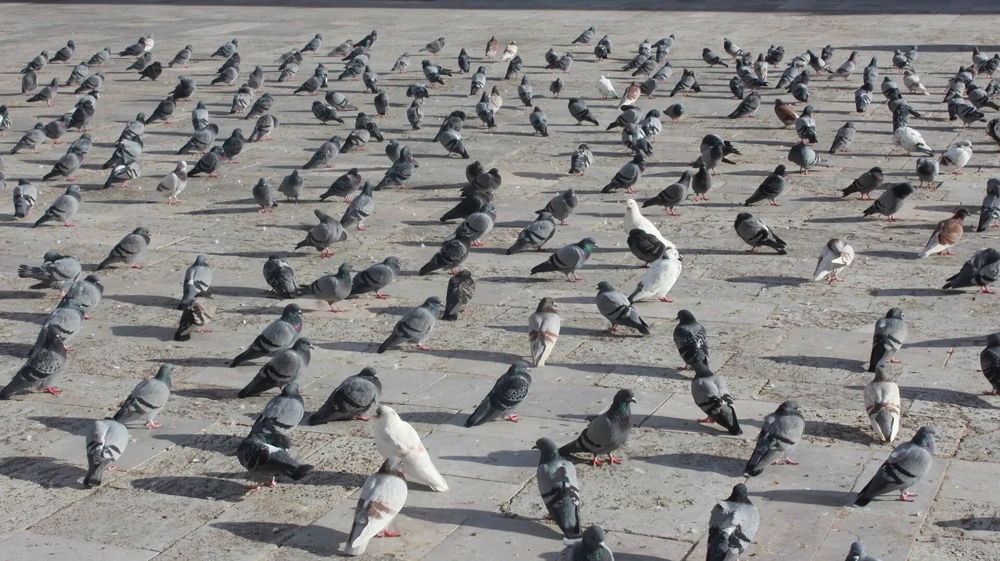
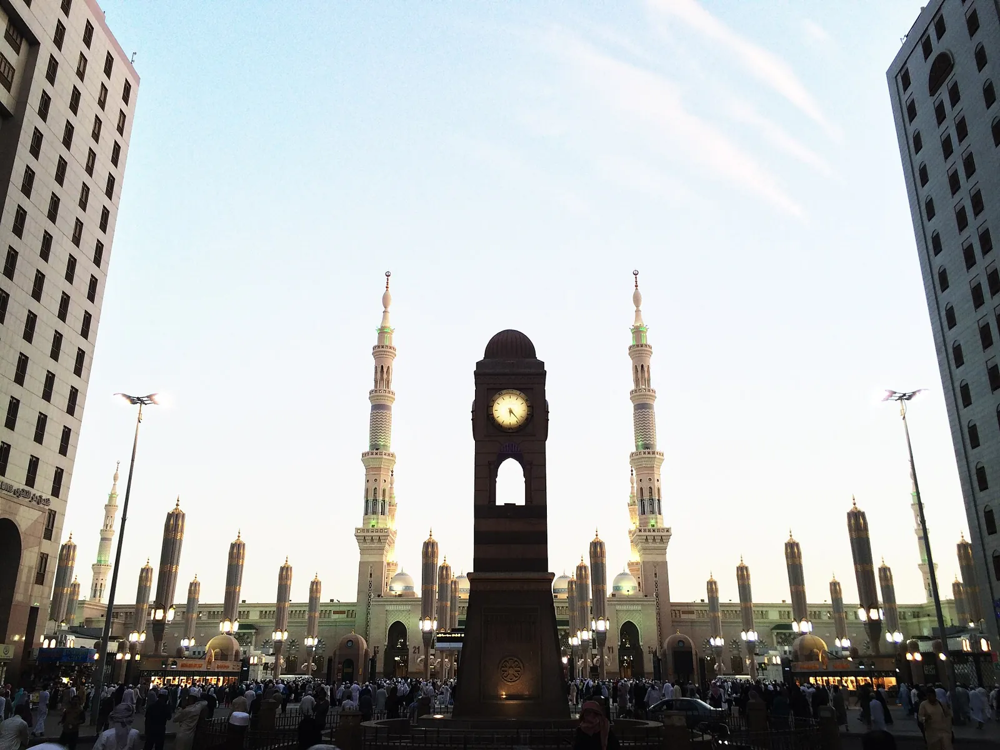
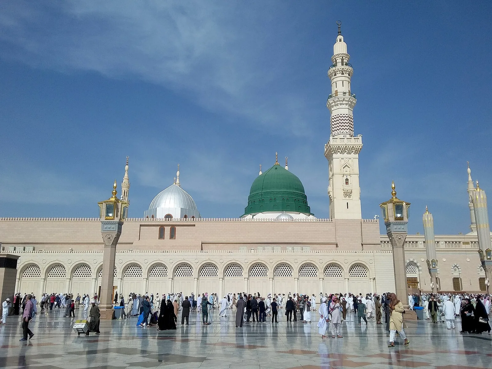

7 Hal Sederhana yang Membuat Kita Selalu Merindukan Tanah Suci

Setelah lebih dari lima belas tahun menemani jamaah berangkat dan pulang, saya menyadari satu hal yang menggelitik: yang paling dirindukan dari Tanah Suci hampir tidak pernah hal-hal besar. Bukan megahnya bangunan, bukan mewahnya hotel, bukan pula panjangnya perjalanan. Yang membekas justru hal-hal sederhana — kecil, sepele, kadang luput dicatat — tetapi entah mengapa terus memanggil, bertahun-tahun setelah kaki menjejak kembali di tanah air.
Kalau Anda pernah ke sana, mungkin daftar ini akan terasa seperti membuka album lama. Dan kalau Anda belum, semoga tulisan ini menyalakan rindu yang menuntun langkah — insya Allah — untuk suatu hari benar-benar berangkat.
1Pandangan Pertama pada Ka'bah
Tidak ada yang benar-benar siap untuk momen ini. Anda bisa saja sudah melihat ribuan foto dan video, tetapi ketika tirai keramaian tersibak dan Ka'bah muncul di hadapan mata untuk pertama kalinya — dada terasa penuh, tenggorokan tercekat, dan air mata sering kali jatuh tanpa diminta.
Itu bukan sekadar melihat bangunan. Itu adalah pertemuan dengan kiblat yang selama ini kita hadapi lima kali sehari dari kejauhan ribuan kilometer. Dan momen sesederhana "melihat" itu akan terus terputar di kepala, lama setelah kepulangan.

2Berdoa Sepuas Hati, Seolah Tak Ada Jarak
Di rumah, doa kita sering tergesa. Di depan Ka'bah, waktu seakan melambat. Ada kelegaan aneh saat menengadahkan tangan di sana — seolah setiap bisikan langsung terdengar, tanpa jarak, tanpa penghalang. Orang-orang menangis tanpa malu, menyebut nama-nama yang mereka cintai, mengadukan hal-hal yang tak pernah mereka ceritakan kepada siapa pun.
Yang paling dirindukan bukan tempatnya, melainkan versi diri kita yang paling jujur dan paling dekat dengan-Nya — dan itu kita temukan di sana.
Ketika pulang, di tengah kesibukan dunia, kita akan merindukan keheningan batin itu: rasa bahwa doa benar-benar didengar.

3Merpati-Merpati yang Tak Pernah Takut
Ada yang lucu sekaligus menyentuh dari kawanan merpati di pelataran masjid. Mereka tak pernah benar-benar takut pada manusia, seakan ikut merasa aman di tempat yang damai itu. Jamaah menaburkan biji-bijian, anak-anak berlarian, dan sejenak — di antara ritual yang khusyuk — ada tawa kecil yang manusiawi.
Hal sesederhana memberi makan merpati ini sering jadi kenangan yang paling hangat. Karena di sanalah kita ingat: ibadah tidak selalu tegang; ada kelembutan dan kebahagiaan kecil di sela-selanya.

4Teduhnya Payung Raksasa Masjid Nabawi
Pindah ke Madinah, ada satu pemandangan yang selalu membuat jamaah berhenti dan menengadah: payung-payung raksasa yang membuka perlahan di pelataran Masjid Nabawi. Di bawahnya, marmer tetap terasa sejuk meski matahari gurun sedang garang. Angin sepoi, langit terbuka, dan suasana yang begitu tenang.
Duduk di pelataran itu, menunggu waktu shalat sambil membaca Al-Qur'an, adalah salah satu kenangan paling menenangkan. Sesuatu yang sederhana — sekadar berteduh — namun terasa seperti dipeluk kedamaian.

5Kubah Hijau yang Memanggil dari Kejauhan
Bagi banyak jamaah, tak ada yang lebih menggetarkan di Madinah selain saat pertama kali menangkap siluet Kubah Hijau dari kejauhan. Hijaunya yang teduh, menaungi tempat paling mulia, seolah berbisik bahwa kita sedang sangat dekat dengan Baginda Rasulullah ﷺ.
Rindu pada Kubah Hijau adalah rindu yang khas Madinah: lembut, hangat, penuh cinta. Dan begitu pulang, siluet itu akan terus muncul di benak — memanggil untuk kembali mengucap salam.

6Keheningan Tawaf di Sepertiga Malam
Siang hari, Masjidil Haram begitu ramai. Tetapi di sepertiga malam terakhir, suasananya berubah. Udara lebih sejuk, kerumunan menipis, dan tawaf terasa lebih lapang — langkah demi langkah mengelilingi Ka'bah di bawah langit gelap, ditemani lampu-lampu keemasan dan lantunan doa yang lirih.
Bagi yang pernah merasakannya, keheningan itu tak tergantikan. Ada kedekatan yang sulit dijelaskan — seolah dunia berhenti sejenak, dan hanya ada kita, Ka'bah, dan Sang Pencipta. Inilah salah satu rindu yang paling dalam.

7Sebutir Kurma dan Secangkir Kopi Arab
Rindu juga bisa datang lewat lidah. Sebutir kurma yang manisnya berbeda saat dinikmati di sana, secangkir kopi Arab (kahwa) yang harum rempahnya, dan tentu saja teguk air Zamzam yang menyegarkan setelah lelah beribadah. Hal-hal kecil ini menempel di ingatan lebih kuat daripada yang kita kira.
Sepulang dari Tanah Suci, mencicipi kurma di rumah sering kali membawa kita kembali — ke pelataran masjid, ke suara azan, ke suasana yang damai itu. Sederhana, tapi cukup untuk membuat mata berkaca-kaca.

Mengubah Rindu Menjadi Langkah
Rindu pada Tanah Suci adalah anugerah. Ia menandakan hati kita masih terhubung dengan tempat yang paling dicintai. Namun rindu yang paling indah adalah rindu yang digerakkan menjadi ikhtiar: memperbaiki niat, menjaga ibadah, menyisihkan tabungan, dan merencanakan perjalanan sejak dini.
Jika hati Anda sedang memanggil untuk kembali — atau untuk berangkat pertama kali — jangan biarkan rindu itu berhenti sebagai perasaan saja. Konsultasikan rencana umrah atau haji Anda bersama Nahdi Tour, dan mari kita bantu wujudkan langkahnya. Anda juga bisa mulai dengan membaca panduan waktu terbaik berangkat umroh agar rencana Anda semakin matang.
Pertanyaan yang Sering Diajukan
Kenapa kita bisa merindukan Tanah Suci padahal baru sekali ke sana?
Karena yang dirindukan bukan sekadar tempat, melainkan suasana batin: ketenangan, kedekatan dengan Allah, dan kebersamaan dalam satu tujuan. Ikatan itu bersifat ruhani sehingga terasa dalam.
Apa hal paling sederhana yang paling dirindukan jamaah?
Beragam, tetapi yang paling sering: gema azan, pandangan pertama pada Ka'bah, merpati di pelataran, kurma dan kopi Arab, serta keheningan tawaf malam.
Bagaimana mengobati rindu sambil menunggu bisa kembali?
Perbanyak ibadah dan doa, jaga niat, mulai menabung, dan rencanakan perjalanan sejak dini. Murottal dan foto kenangan juga membantu menjaga rindu tetap hidup.
Apakah rindu Tanah Suci pertanda akan dipanggil kembali?
Tidak ada yang bisa memastikan, tetapi berhusnuzan kepada Allah dianjurkan. Iringi rindu dengan doa, ikhtiar, dan persiapan nyata.
Kapan waktu terbaik merencanakan kembali?
Bergantung prioritas Anda. Umumnya November–Februari lebih sejuk dan tidak sepadat Ramadhan. Mulailah jauh hari dan pilih travel resmi yang amanah.
Penutup
Pada akhirnya, hal-hal sederhana inilah yang membuat Tanah Suci begitu sulit dilupakan. Ia mengajarkan kita bahwa kebahagiaan sejati sering bersembunyi di detail-detail kecil: sebutir kurma, seekor merpati, sebuah pandangan, sebuah doa. Semoga rindu ini terus menyala di hati kita, dan semoga Allah memanggil kita kembali ke rumah-Nya. Aamiin.